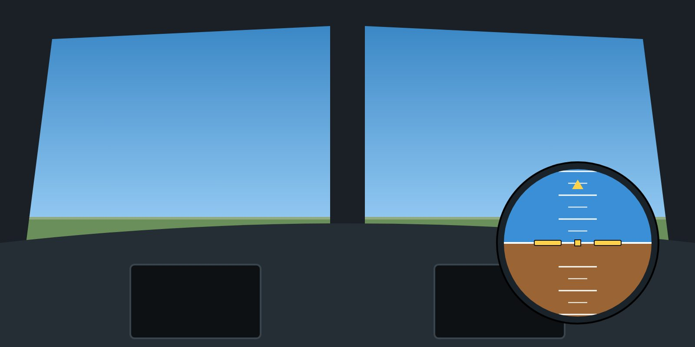

Algerian aviation law and the ANAC, differences from ICAO, flight procedures and fuel, and the duty time rules — with an interactive duty time calculator and practice exercises.
7 lessons · 2 modules · about 1 hours
Training material only. It does not replace the Aircraft Flight Manual, FCOM, QRH, MEL or the Domestic Airlines Operations Manual, which always take precedence.
Lesson 01: The Algerian Legal Framework and the ANAC
Lesson 1 of 7 · about 8 min
Learning objectives
Rank the Algerian legal texts from the Constitution to circulars.
Describe the role of the civil aviation authority (ANAC).
Locate the ICAO standards in Algerian laws, decrees and circulars.
Algeria applies the ICAO standards, with published differences.
Algeria and international aviation law
The People's Democratic Republic of Algeria applies the ICAO Standards and Recommended Practices (SARPs). The ICAO Annexes are in force except where a difference is published. PANS-OPS (Doc 8168 Volumes I and II), the Regional Supplementary Procedures (Doc 7030) and Doc 4444 are also used.
Convention or treaty
Signed by Algeria
ICAO
07/05/1963
Chicago
06/06/1963
Rome
12/07/1964
Warsaw
31/08/1964
Geneva
08/11/1964
Montreal
29/11/1965
The hierarchy of texts
The hierarchy of Algerian legal texts: each level must respect the levels above it. A circular cannot change a decree; it only explains how to apply it.
Law — voted by the Assembly, applicable as soon as it is published in the Official Journal.
Decree — a government act, without consultation of the Assembly, signed by the President or the Prime Minister.
Order (arrêté) — an administrative decision; it can be specific to an activity or a geographical area.
Circular — the lowest level; in principle it has no legal value of its own and only explains how laws, decrees and orders apply.
The authority: ANAC
The ANAC (Agence Nationale de l'Aviation Civile — National Civil Aviation Agency) is the civil aviation authority in Algeria. Texts issued under the former authority keep their original references, for example Instruction 771/DACM or Circular 1830/DACM. The ANAC:
applies in Algeria the international conventions and treaties signed by the government;
applies the laws and executes the decrees, and supervises and controls all air transport activities;
issues and controls flight crew licences, in accordance with ICAO Annex 1 and national regulation.
ANAC website
Regulations, circulars, forms and news of the Algerian civil aviation authority: www.anac.dz (opens in a new tab).
The main reference laws are Laws 98-06, 64-166, 08-02 and 15-14, together with their decrees. Aeronautical information is published by the AIS (SIA) of Algeria.
Where the ICAO standards are found
Where the ICAO standards are found in Algerian regulation. ICAO Annexes apply in Algeria except where a difference is published (AIP Algeria GEN 1.7).
Most restrictive rule
Algerian laws and decrees also affect foreign operators in Algeria. When the Algerian rule and another regulation (European or foreign) differ, the most restrictive one applies.
Which text has the lowest level in the Algerian hierarchy?
Decree
Order (arrêté)
Circular
Law
Answer: C. A circular only explains how the higher texts apply.
Module 1 · Algerian Regulation
Lesson 02: Differences from ICAO Standards
Lesson 2 of 7 · about 9 min
Learning objectives
Find where the Algerian differences are published.
Apply the main differences to Annexes 1, 2, 4, 9, 10, 11, 12, 13 and 15.
Apply the differences to Doc 4444 and Doc 8400.

Know the differences: flight plans over desert and sea, 1,500 ft obstacle clearance.
Where to find them
The differences from ICAO SARPs are published in AIP Algeria GEN 1.7 and in the Jeppesen Airway Manual (Air Traffic Control — State Rules and Procedures — Africa). Annex 6 (Operation of Aircraft): no difference. The national texts are on the ANAC website: www.anac.dz.
Annex 2 — Rules of the Air
Subject
Algerian rule
Fitness to fly
A crew member who feels unfit to fly shall not act as a pilot or crew member.
Minimum height
Except over cities, assemblies of people or dense constructions: not below 150 m (500 ft) above ground, water or the highest obstacle.
IFR minimum height
At least 1,500 ft (450 m) above the highest obstacle within 8 km (4.3 NM) of the estimated position.
Prohibited area entered
Advise ATC, leave the area and land as soon as possible at the nearest aerodrome — or the aircraft may be forced to land by the military.
Flight plan
Required for all IFR flights and for every flight (VFR or IFR) over desert areas and the sea.
ETD in the flight plan
The time the aircraft is ready to leave the parking stand.
Other Annexes
Reference
Algerian difference
Annex 1 — Licensing
Algeria does not apply the multi-crew pilot licence (MPL).
Annex 4 — Charts
Some 1:500,000 charts published in Algeria do not conform to Chapter 10 and are not labelled ICAO.
Annex 9 — Facilitation
No crew member certificate to the Appendix 7 model; crews not on regular international services need a valid passport and possibly a visa.
Annex 10 — Communications
Conform to the SARPs; Annex 10 Volume II procedures apply with the Algerian authority.
Annex 11 — ATS
Alerting (emergency phases) in the Algiers FIR follows a specific instruction, with delays adapted to desert and maritime areas.
Annex 12 — SAR
Foreign SAR teams need a special permission.
Annexes 13 and 15
Applicable; some aeronautical publications may be without English translation; international NOTAMs are translated into English as far as possible.
Doc 8400 — Abbreviations
QAN (wind direction) is referenced to true north; QNH is never given in inches of mercury.
Doc 4444 — ATM
Minimum obstacle clearance 1,500 ft (450 m) instead of 1,000 ft; special VFR not authorised below 1.5 km visibility (except helicopters); flight plan changes take effect only when acknowledged by ATC.
Key takeaways
Differences: AIP Algeria GEN 1.7 and Jeppesen State Rules.
IFR minimum height 1,500 ft within 8 km; minimum height 500 ft.
Flight plan for all IFR flights and any flight over desert or sea.
No MPL in Algeria; QNH never in inches.
Knowledge check
What is the minimum obstacle clearance for IFR flight in Algeria?
1,000 ft within 5 NM
1,500 ft (450 m) within 8 km (4.3 NM)
2,000 ft within 5 NM
500 ft within 8 km
Answer: B. Algeria requires 1,500 ft above the highest obstacle within 8 km of the estimated position.
Module 1 · Algerian Regulation
Lesson 03: Flight Procedures, VFR and Fuel
Lesson 3 of 7 · about 9 min
Learning objectives
Apply the Algerian holding speeds, airspace, altimeter and communication rules.
State the night VFR conditions.
Calculate the fuel with the Algerian final reserve for jets and propeller aircraft.
Holding speeds, airspace classes and fuel reserves.
Flight procedures
Holding speeds: in accordance with Doc 8168 (table below).
Instrument approaches: PANS-OPS Doc 8168 Volume II. Algeria publishes state aerodrome operating minima for landing and take-off.
Airspace: only classes A, D and E are used.
Altimeter settings: international aerodromes give QNH and QFE; domestic aerodromes give QFE only (QNH on request).
121.5 MHz: listening watch outside controlled airspace and within 27 NM of restricted, prohibited or danger areas, especially near the FIR boundary.
ACAS II: required for turbine aircraft of 5,700 kg MTOW or more, or authorised to carry more than 19 passengers (version 7.1 in EU airspace).
CPDLC: log on to DAAA 15–30 minutes before entering the Algiers FIR (flight ID and registration as in the flight plan); log off 5 minutes after leaving it.
Flight plans to Europe: IFPS/CFMU addressing (AFTN EUCHZMFP, EUCBZMFP; SITA BRUEP7X, PAREP7X).
Levels
Normal conditions
Turbulence
Up to 14,000 ft inclusive
230 kt (170 kt CAT A/B)
280 kt (170 kt CAT A/B)
Above 14,000 to 34,000 ft
240 kt
280 kt or M0.80, whichever is less
Above 34,000 ft
M0.83
M0.83
Turbulence holding speeds only with ATC clearance unless the published holding allows them.
VFR and night VFR
Special VFR is not allowed for fixed-wing aircraft.
VFR is prohibited in class A airspace, above FL195 and whenever ATC suspends VFR.
Night is the period between the end of civil twilight and civil dawn. Sunrise and sunset times are in the AIP ephemerides.
Cruise: at least 650 m above the highest obstacle within 8 km (450 m in some cases); semicircular levels above 900 m MSL or 650 m AGL.
Not inside airways without ATC authorisation; published tracks in other controlled airspace; flight plan filed 30 minutes before ETD; continuous VHF watch.
Fuel
Fuel calculation summary. Algeria has a difference on the final reserve: 30 minutes for jets and 45 minutes for propeller aircraft. The company fuel policy (OM A) applies.
Key takeaways
Airspace classes A, D, E only; domestic aerodromes give QFE.
CPDLC: log on DAAA 15–30 min before the Algiers FIR, log off 5 min after.
Night = end of civil twilight to civil dawn; night VFR only for IFR-rated pilots.
Final reserve: jets 30 min, propeller aircraft 45 min.
Knowledge check
What is the Algerian final reserve fuel for a Dash 8-Q400?
30 minutes
45 minutes
60 minutes
5 % of trip fuel
Answer: B. Propeller aircraft: 45 minutes; jets: 30 minutes.
Module 2 · Duty Time and Rest
Lesson 04: Duty Time: References, Limits and Legs
Lesson 4 of 7 · about 8 min
Learning objectives
Name the legal references of Algerian duty time.
Apply the basic DTP limits and the leg reduction.
State the cumulative flight duty and flight time limits.
Duty time starts at check-in and ends at check-out.
References
Constitution (articles 85-3° and 125); Law 90-11 of 21/04/1990 (amended); Law 98-06 of 27/06/1998; Decree 02-89; Decree 04-414 of 20/12/2004; Decree 10-140 of 23/05/2010. The company OM A FTL chapter applies these rules; where rules differ, the most restrictive applies.
The duty time period (DTP)
The duty time period starts at check-in and ends at check-out. In the course examples, check-in is 1 hour before the first take-off and check-out 30 minutes after the last landing — use the report times in your OM A.
Leg reduction
Leg reduction: 13 h for 1 or 2 legs, then 30 minutes less for each leg from the third, down to a maximum reduction of 2 hours (11 h for two pilots, 10 h for a single pilot).
How to calculate
Maximum DTP = basic limit (13 h two pilots / 12 h single pilot) − 30 min × (legs − 2), with a maximum reduction of 2 h. Example: 4 legs, two pilots → 13 h − 1 h = 12 h.
Cumulative limits
Limit
Flight duty (FDP)
Flight hours
7 days (week)
60 h
—
28 consecutive days
190 h
100 h
Year
—
900 h
Key takeaways
DTP runs from check-in to check-out: 13 h two pilots, 12 h single pilot.
From the 3rd leg: −30 min per leg, maximum −2 h.
Positioning counts in the DTP but not as a leg.
60 h / week and 190 h / 28 days duty; 100 h / 28 days and 900 h / year flight time.
Knowledge check
A two-pilot crew plans 5 legs. What is the maximum DTP before any WOCL reduction?
13h00
12h00
11h30
11h00
Answer: C. 13 h − 3 × 30 min = 11 h 30.
Module 2 · Duty Time and Rest
Lesson 05: Window of Circadian Low, Extensions and the Commander's Authority
Lesson 5 of 7 · about 9 min
Learning objectives
Apply the WOCL reductions for duties that start in, end in or include the WOCL.
Decide whether a 1 h extension is permitted.
Describe the commander's authority and the waivers.
The window of circadian low: 02:00 to 05:59 local.
The window of circadian low (WOCL)
The WOCL is the period from 02:00 to 05:59 local time, when the body is least alert.
The WOCL reduction depends on where the duty time period starts. Red: a duty starting at 05:00 has 1 h in the WOCL — reduce the DTP by 1 h (100 %). Amber: a duty ending at 04:00 has 2 h in the WOCL — reduce by 1 h (50 %).
DTP starts in the WOCL → reduce by 100 % of the time spent in the WOCL, up to 2 h. Check-in 05:30 → 30 min in the WOCL → −30 min.
DTP ends in the WOCL, or includes all of it → reduce by 50 % of the time spent in the WOCL. Check-out 04:00 → 2 h in the WOCL → −1 h.
Tip
When the duty ends in the WOCL, the reduction changes the end time, which changes the time in the WOCL. Work it out step by step — or use the calculator in Lesson 7, which solves it for you.
Extension of the DTP
Extension of the DTP by 1 hour. A DTP that follows an extension and starts between 22:00 and 04:59 is limited to 11 h 45. Medevac and emergency flights are exempt from these restrictions.
When extensions are used on two consecutive DTPs, the rest due before and after the flight is taken in a row.
All these restrictions are cancelled for medevac and emergency flights.
Commander's authority
After consulting the crew and with their agreement, the commander may increase the DTP by up to 2 h (crew not reinforced).
If, on the last leg, unforeseen conditions after take-off would exceed the authorised extension, the flight may continue to the destination or the alternate.
The commander may reduce or extend the DTP, or extend the rest, in case of severe crew fatigue.
When a DTP or a rest is extended or reduced by 1 h, a copy of the commander's report is sent to the Authority within 28 days.
Waivers by the Authority
Urgent (SAR) flights, rescue flights for aircraft maintenance, finishing a flight after unforeseen conditions, national interest or defence flights, and high company workload — provided the DTP limit is not exceeded by more than 20 h in 28 days and 100 h in a year.
Key takeaways
WOCL = 02:00–05:59 local.
Starts in WOCL: −100 % of the time inside (max 2 h); ends in / includes WOCL: −50 %.
+1 h extension: not with more than 6 legs, nor with more than 2 h in WOCL and more than 4 legs; max 2 per 7 days.
Commander: up to +2 h with crew agreement; report to the Authority within 28 days.
Knowledge check
A duty starts at 05:00 local. How much WOCL reduction applies?
None
30 min (50 % of 1 h)
1 h (100 % of 1 h)
2 h
Answer: C. It starts in the WOCL: 05:00–06:00 = 1 h inside, reduced by 100 % = 1 h.
Module 2 · Duty Time and Rest
Lesson 06: Rest Periods and Worked Examples
Lesson 6 of 7 · about 9 min
Learning objectives
Calculate the minimum rest at home base and away from base.
Apply the weekly rest rule.
Work through complete duty and rest examples.
Rest is part of flight safety.
Rest rules
Minimum rest depends on the DTP actually flown and on where the rest is taken.
Example 1 — day duty, 4 legs
Two pilots, first take-off 08:15, 4 legs. Maximum DTP: 13 h − 1 h (4 legs) = 12 h. Check-in 07:15 → latest check-out 19:15 → latest last landing 18:45. Rest at base: 12 h → next check-in 07:15.
Example 2 — early start in the WOCL, 4 legs
First take-off 06:30, check-in 05:30 → 30 min in the WOCL × 100 % = −30 min. Maximum DTP: 12 h (4 legs) − 30 min = 11 h 30. Latest check-out 17:00 → latest last landing 16:30. Rest at base 12 h → next check-in 05:00.
Example 3 — night duty ending in the WOCL, 3 legs
VIP flight with 3 legs, landing at 03:30, check-out 04:00 → 2 h in the WOCL × 50 % = −1 h. Maximum DTP: 12 h 30 (3 legs) − 1 h = 11 h 30. Check-in 16:30, take-off 17:30. Rest 12 h → next check-in 16:00.
Key takeaways
Rest at base ≥ DTP flown, minimum 12 h; away ≥ DTP flown, minimum 10 h.
Every 7 days: 36 consecutive hours including 2 nights.
A crew finishes an 11 h 30 duty away from base. What is the minimum rest?
10h00
11h30
12h00
36h00
Answer: B. Rest away from base ≥ DTP flown (11 h 30), and not less than 10 h.
Module 2 · Duty Time and Rest
Lesson 07: Interactive Duty Time Calculator
Lesson 7 of 7 · about 12 min
Learning objectives
Calculate a maximum DTP for any number of legs and start time.
Check a planned duty and the rest that follows.
Practise with exercises until the method is automatic.
Calculate it — then check it.
Use the calculator
Enter the crew, the number of legs and the first take-off time. The calculator applies the leg reduction, the WOCL reduction and the extension rules step by step, then draws the duty and rest on a timeline. Change the values and watch the result change.
Try the three examples of Lesson 6 and check that you obtain the same results.
Move the first take-off from 08:00 to 05:00 with 4 legs and watch the WOCL reduction appear.
Enter a planned last landing to check whether a roster respects the limit.
Duty time calculator
Calculation tool for training, based on the Algerian regulation as taught in this course. It does not replace the OM A FTL chapter or the crew planning system; where rules differ, the most restrictive applies.
Practice exercises
Remember the method
Basic limit: 13 h (two pilots) or 12 h (single pilot).
Legs: −30 min per leg from the third, maximum −2 h.
WOCL: −100 % of the time inside if the duty starts in the WOCL (max 2 h); −50 % if it ends in or includes it.
Extension: +1 h only if permitted.
Check-out and rest: rest ≥ DTP flown, minimum 12 h at base or 10 h away.
Key takeaways
Basic limit → legs → WOCL → extension → rest.
Use the calculator to check rosters; the OM A and the crew planning system remain the reference.
Knowledge check
Two pilots, 6 legs, take-off 09:00, check-in 08:00. Maximum DTP?
13h00
11h30
11h00
10h00
Answer: C. 13 h − 4 × 30 min = 11 h; no WOCL in the duty.
Training material only. It does not replace the Aircraft Flight Manual, FCOM, QRH, MEL or the Domestic Airlines Operations Manual, which always take precedence.